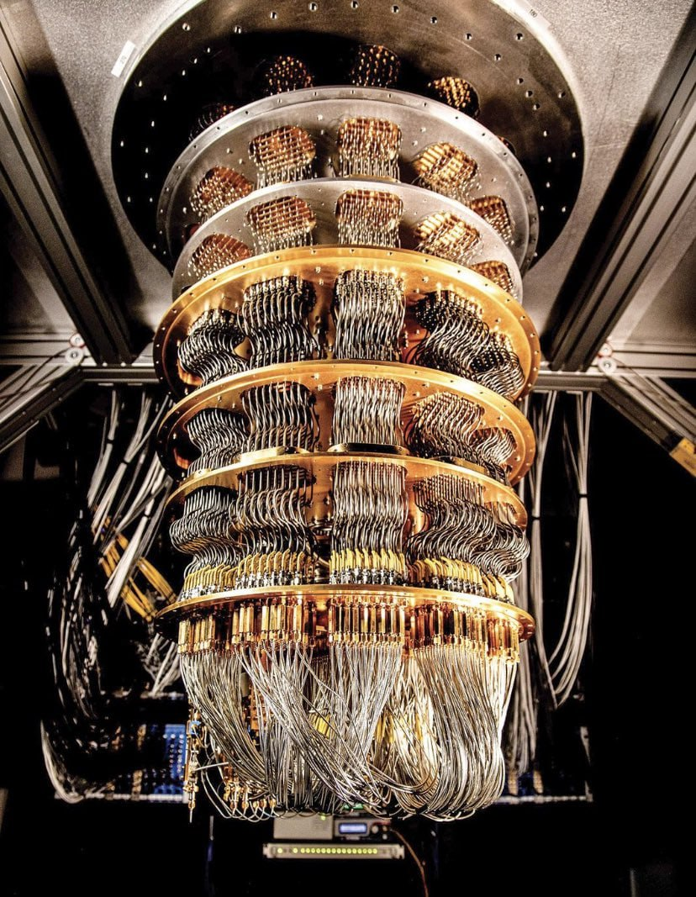
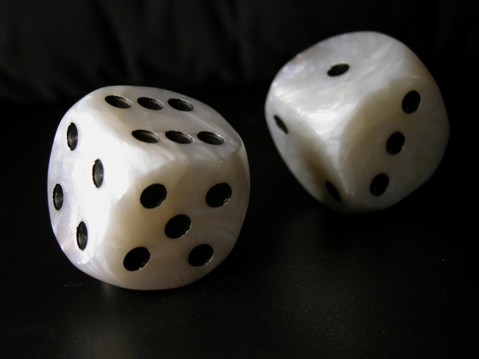
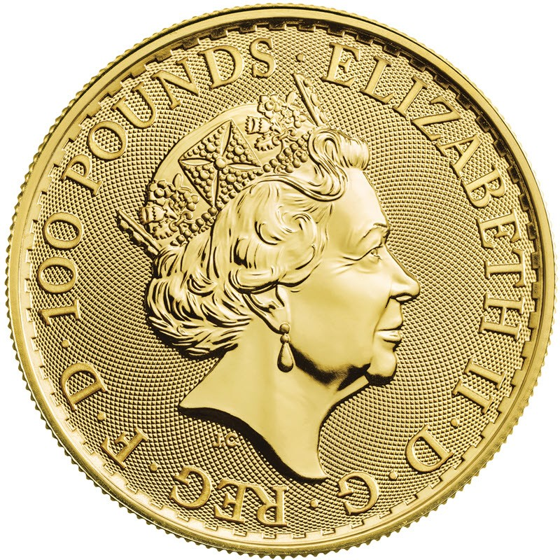

Предметы, связанные с вероятностью
На этой странице собраны реальные объекты, в работе которых случайность играет ключевую роль: от квантового компьютера до обычных игральных кубиков. Выберите раздел:

На этой странице собраны реальные объекты, в работе которых случайность играет ключевую роль: от квантового компьютера до обычных игральных кубиков. Выберите раздел:


Как они работают. У честного кубика шесть граней, и вероятность выпадения каждой равна 1/6. Бросок одного кубика не зависит от предыдущих. Если бросать два кубика, сумма очков распределяется неравномерно: сумма 7 выпадает чаще всего (6 способов из 36, то есть 1/6), а суммы 2 и 12 только по одному способу (1/36).
| Миниатюра | Описание |
|---|---|
|
 |
Монета: классический пример случайного эксперимента с двумя равновероятными исходами (орёл и решка). |
| Квантовый компьютер: вероятностный характер результата измерения кубита. |
Как он работает. Обычный бит принимает значение 0 или 1. Кубит находится в суперпозиции: до измерения у него есть вероятность оказаться в состоянии 0 и вероятность оказаться в состоянии 1. Квантовые алгоритмы подбирают операции так, чтобы вероятность правильного ответа росла, а неправильных падала. Результат измерения всё равно случаен, поэтому вычисление повторяют много раз (закон больших чисел) и берут наиболее частый ответ.